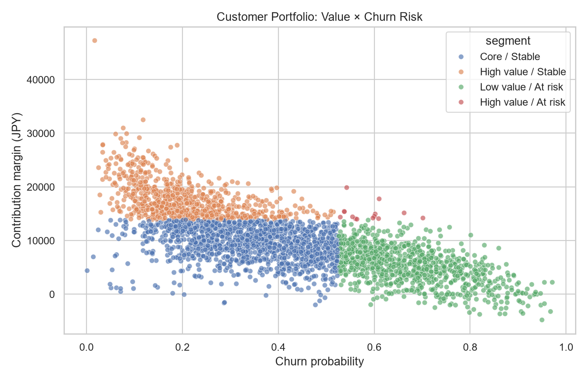
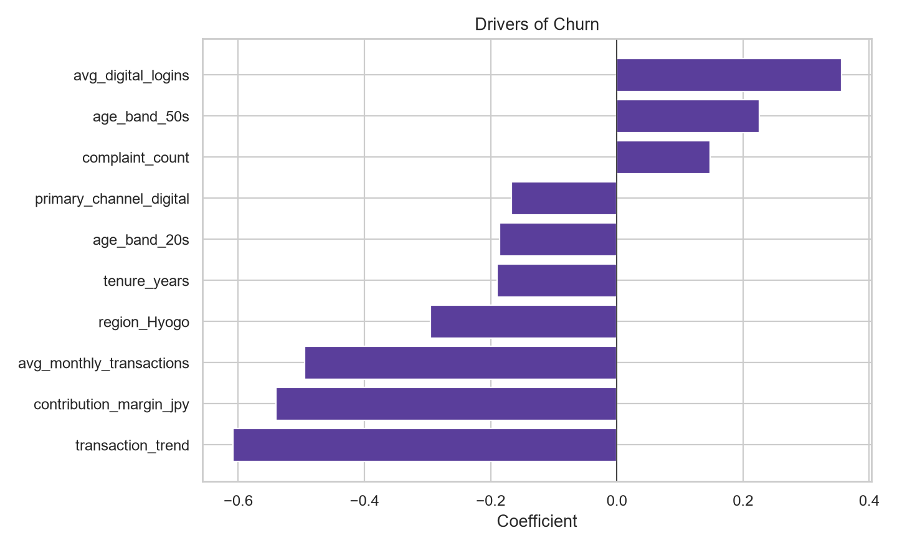

「売上が高い顧客」ではなく、サービス原価・特典・期待損失を控除した貢献利益と離反確率を組み合わせ、優先対応先を選定した。
| 区分 | 顧客数 | 平均貢献利益 | 離反率 | リスク利益額 |
|---|---|---|---|---|
| Core / Stable | 3,629 | 9,344 | 3.2% | 11,225,508 |
| High value / At risk | 29 | 15,264 | 17.2% | 260,461 |
| High value / Stable | 1,971 | 17,669 | 1.5% | 6,946,608 |
| Low value / At risk | 2,371 | 5,252 | 12.6% | 8,152,038 |


データは個人情報を使用しない合成データ。金額・施策効果は仮定であり、実在企業を表さない。